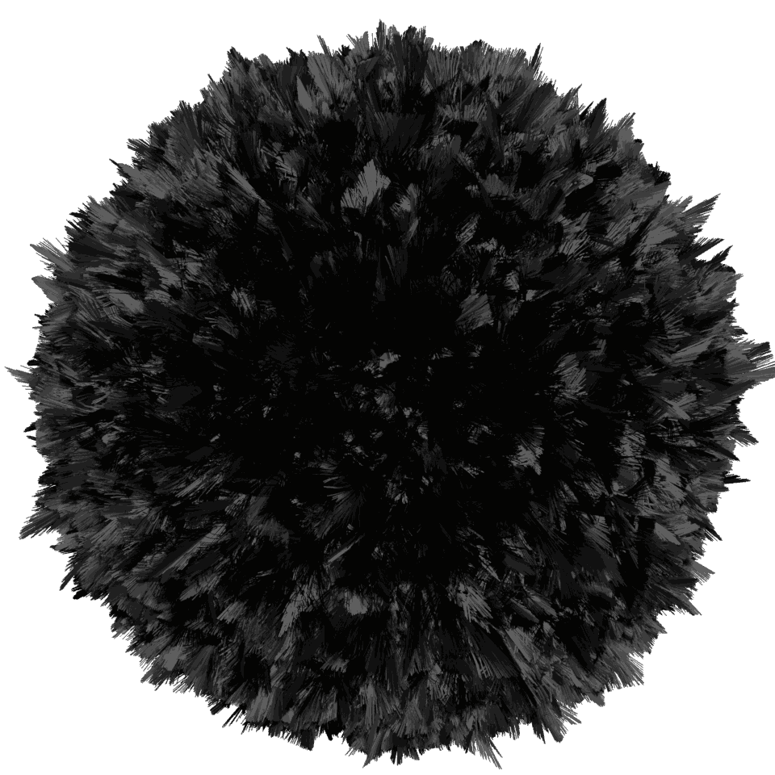

Building the Modern Web
About Us:
I am a Developer Who is dedicated to creating innovative Web experiences.
Want to work with us?
Reach Out Using Our Socials
Discord/Github
Want to work with us?
Reach Out Using Our Socials
Discord/Github